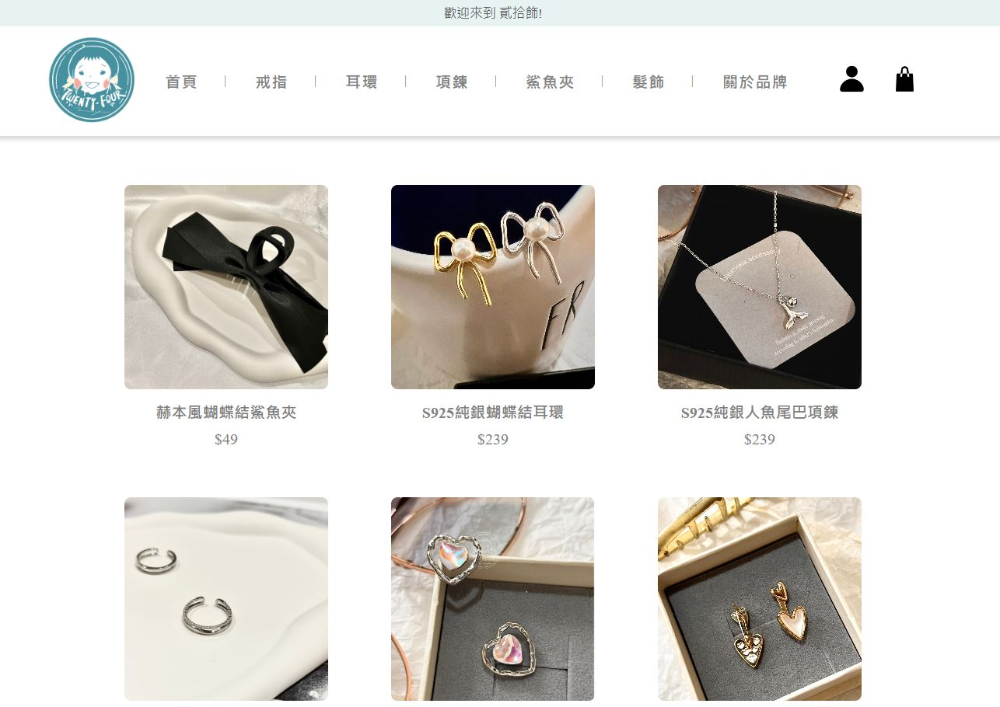

貳拾飾是一個專門銷售飾品的購物網站，讓用戶能夠輕鬆地瀏覽、選擇並購買商品。專案採用
React
框架開發前端，並結合node.js的Express框架和MongoDB資料庫，執行後端功能，實現產品展示、用戶認證、購物車、訂單管理等核心功能。
前端功能
產品展示與分類過濾
產品詳細頁面
- 提供每個產品的詳細訊息，包括名稱、價格、描述、顏色等
- 用戶可以選擇數量和顏色，並將產品加入購物車
購物車功能
- 用戶可以在購物車頁面查看已選購的商品，修改數量或刪除商品
- 動態計算購物車內商品的總金額，方便用戶查看總消費
結帳與訂單摘要
後端功能
用戶註冊與登入
訂單管理
技術棧
React
- React Router：進行客戶端路由管理，並實現SPA
- 狀態管理：使用 useState 和 useEffect 管理和監控應用程式狀態
-
組件化開發：採用組件化方法開發頁面和功能，包括
Nav、Footer、ProductGrid 等組件
- 自定義Hook：使用自定義鉤子 useCart 處理購物車相關邏輯
backend
- Express：使用Express框架，更迅速的建立伺服器
- RESTful API : 構建RESTful API，包含使用者註冊、登入和訂單管理
- MongoDB : 連接 MongoDB 資料庫，並使用 Mongoose 進行數據模型管理
- Bcrypt : 對用戶密碼進行加密存儲，確保密碼的安全性
- Connect Flash : 顯示用戶操作成功或失敗的提示訊息